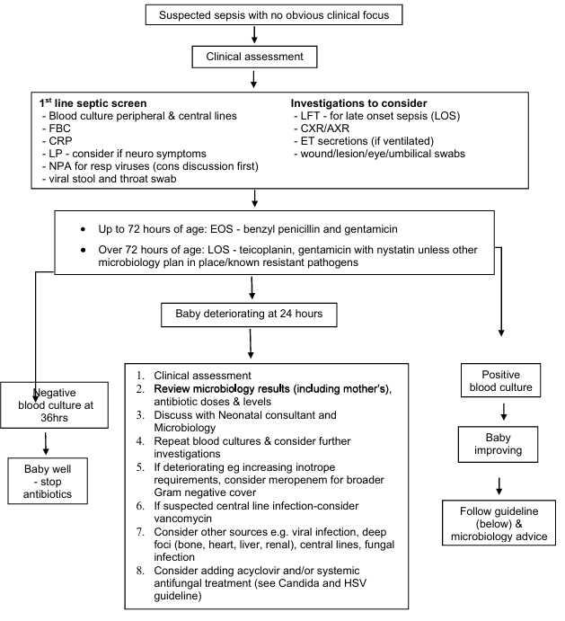

Infection Neonatal Early and Late Onset
1 Scope and exceptions This guideline applies to:
Setting: Directorate - Neonatology Individuals: All Neonatal Staff and Midwifery Staff Speciality: Neonatology
This guideline does not apply to adults and children outside those on the postnatal wards and neonatal unit.
The guideline uses the terms ‘woman’ or ‘mother’ throughout. These should be taken to include people who do not identify as women but are pregnant or have given birth. Similarly, where the term ‘parents’ is used, this should be taken to include anyone who has main responsibility for caring for a baby
https://www.nice.org.uk/guidance/ng194
1 Scope and exceptions 2 Summary and guideline 2.1 Aim of guideline 2.2 Summary flowchart of neonatal infection management 3 Early onset sepsis (EOS) 3.1 Antenatal risk factors for early onset sepsis1 3.1.1 Red flag 3.1.2 Risk factors 3.2 Clinical signs of early onset sepsis1 3.2.1 Red flag clinical indicators 3.2.2 Transitional symptoms (relevant to early onset sepsis only)3 3.2.3 Other clinical signs1 3.3 Medical review for early onset sepsis1,3 3.4 Action required for early onset sepsis 3.5 Observations required1 3.6 Investigation for early onset sepsis 3.6.1 Babies undergoing observation only 3.6.2 Babies on antibiotic treatment for early onset sepsis 3.6.2.1 Haematology 3.6.2.2 Clinical chemistry 3.6.2.3 Microbiology 7 3.6.2.4 Other investigations 8 3.7 Empiric antimicrobial treatment for early onset sepsis 8 3.8 Stopping antibiotics in well infants with previously suspected EOS 9 3.8.1 Reassuring investigations 9 3.8.2 Indeterminate investigations 9 4 Late onset sepsis (LOS) 10 4.1 Signs and symptoms of late onset sepsis in infants1 10 4.2 Investigation for late onset sepsis 10 4.2.1 Haematology 10 4.2.2 Clinical chemistry 10 4.2.3 Microbiology 11 4.2.4 Other specimens 11 4.3 Empiric antimicrobial treatment for late onset sepsis 11 4.4 Prophylactic antifungals for late onset sepsis 12 5 Blood culture interpretation for EOS and LOS 12 6 CSF investigations/interpretation for EOS and LOS 13 6.1 Interpreting neonatal CSF parameters 13 7 Antimicrobial treatment course length (EOS and LOS) 14 7.1 Targeted antimicrobial treatment depending on clinical syndrome or pathogen 14 7.2 Blood culture negative infection 14 7.3 Meningitis 14 7.3.1 Repeat lumbar punctures 14 7.3.2 Negative CSF culture/PCR/but equivocal microscopy result/high clinical suspicion 15 7.4 Infants with invasive S. aureus disease 15 7.5 Ophthalmia neonatorum1 15 7.5.1 Mildly inflamed/erythematous eyes 15 7.5.2 Severely affected eyes 15 7.5.3 Infective causes: 16 8 References - literature 21 9 References - clinical decision making 21 10 Rationale for differing from NICE guidance1 22 11 Appendices 22 12 Document Control and Version history 27 13 Consultation and review 27 14 Document imprint 27
2 Summary and guideline 2.1 Aim of guideline
The aim of this guideline is to summarise the local application of the NICE guidelines (last updated 2024) The risk factors and empirical antibiotics of choice differ between early and late onset infection: Early onset infection (EOS) is defined as any infection in an infant less than 72 hours of age Late onset infection (LOS) is defined as any infection in an infant after 72 hours of age.
Babies will be assessed using this guideline if there are antenatal risk factors increasing their risk of sepsis (section 3.1) in the first 72 hours of age or if they have any clinical concern regarding suspected sepsis at any point (section 3.2). Note in this guideline, the terms sepsis and infection are used interchangeably, as these are the terms used in practice however there is a clinical difference between infants with an infection (microbiologically proven or otherwise) and true sepsis with systemic multi-organ effects. 3
4 Summary flowchart of neonatal infection management

Suspected sepsis with no obvious clinical focus Clinical assessment 1st line septic screen Investigations to consider - Blood culture peripheral & central lines - LFT - for late onset sepsis (LOS) - FBC - CXR/AXR - CRP - ET secretions (if ventilated)
- LP - consider if neuro symptoms - wound/lesion/eye/umbilical swabs
- NPA for resp viruses (cons discussion first) - viral stool and throat swab Up to 72 hours of age: EOS - benzyl penicillin and gentamicin Over 72 hours of age: LOS - teicoplanin, gentamicin with nystatin unless other microbiology plan in place/known resistant pathogens
Baby deteriorating at 24 hours Negative blood culture at 36hrs Baby well - stop antibiotics Follow guideline (below) & microbiology advice 1. Clinical assessment 2. antibiotic doses & levels 3. Discuss with Neonatal consultant and Microbiology 4. Repeat blood cultures & consider further investigations 5. If deteriorating eg increasing inotrope requirements, consider meropenem for broader Gram negative cover 6. If suspected central line infection-consider vancomycin 7. Consider other sources e.g. viral infection, deep foci (bone, heart, liver, renal), central lines, fungal infection 8. Consider adding acyclovir and/or systemic antifungal treatment (see Candida and HSV guideline) Positive blood culture Baby improving 3 Early onset sepsis (EOS) Early onset infection (EOS) is defined as any infection in an infant less than 72 hours of age 3.1 Antenatal risk factors for early onset sepsis
3.1.1 Red flag 1 Suspected or confirmed infection in another baby in the case of a multiple pregnancy.
3.1.2 Risk factors 1. Invasive group B streptococcal infection in a previous baby or maternal group B streptococcal colonisation, bacteriuria or infection in the current pregnancy. For maternal colonisation, this is not a risk factor if intrapartum antibiotics have been given 4 hours or more before delivery
Pre-term birth following spontaneous labour before 37 weeks’ gestation.
Confirmed rupture of membranes for more than 18 hours before a pre-term birth.
Confirmed prelabour rupture of membranes at term for more than 24 hours before the onset of labour. (prelabour as defined by maternity team, if any uncertainty regarding definition, treat as risk factor)
Intrapartum fever higher than 38°C if there is suspected or confirmed bacterial infection.
Clinical diagnosis of chorioamnionitis (as defined by maternity team)
3.2 Clinical signs of early onset sepsis
3.2.1 Red flag clinical indicators
1 Apnoea Seizures Need for cardiopulmonary resuscitation (after delivery or if receiving therapeutic hypothermia)
Need for mechanical ventilation (in term infants)
Signs of shock
3.2.2 Transitional symptoms (relevant to early onset sepsis only)
3 One persistent physiologic abnormality >4hrs (i.e. trigger point at 4 hours) or 2 lasting for > 2hrs (i.e. trigger point at 2 hours) Tachycardia (HR > 160) Tachypnoea (RR > 60) Temperature abnormality (lower than 36 unexplained by environmental factors C or higher than 38 C Respiratory distress (grunting, flaring, or retracting) not requiring supplemental O2
3.2.3 Other clinical indicators
1 Altered behaviour or responsiveness Altered muscle tone (for example floppiness)
Feeding difficulties (for example feed refusal)
Feed intolerance (including vomiting, excessing gastric aspirates and abdominal distension Abnormal heart rate (bradycardia)
Hypoxia (for example central cyanosis or reduced oxygen saturation level)
Persistent pulmonary hypertension of the newborn
Jaundice within 24 hours of birth Signs of neonatal encephalopathy
Unexplained excessive bleeding, thrombocytopenia or abnormal coagulation 5
Altered glucose homeostasis (hypoglycaemia or hyperglycaemia) Metabolic acidosis (base deficit of 10mmol/l or greater)
3.3 Medical review for early onset sepsis 1,3
Medical team to review promptly (within 1 hour of delivery or clinical concern). Every review should include a clinical assessment of the baby including review of the maternal history and a full clinical examination of the baby. This should be clearly documented using the templates on Connect. 1
There are 3 categories of clinical signs an infant might have: Red flags Transitional symptoms Clinical indicators i 1,iii Red flags are very concerning clinical signs and warrant commencing treatment irrespective of other risk factors. can be due to environmental events or due to delayed transition to extra-utero life, therefore if these are the only findings and there are no antenatal concerns, infants should have NEWTT observations and a medical review again after 2 hours and at least 2 hourly until the concerns have resolved. If infants still have these symptoms at the defined trigger point, or they commence late (after 4 hours of age), treatment should be commenced. NEWTT observations should continue for 12 hours. Clinical indicators indicate some concern regarding sepsis - below.
3.4 Action required for early onset sepsis The required action will depend on the risk factors (section 3.1) and the findings of the medical review (section 3.3) and are summarised as per the table below (Table 1): Clinical signs 0 Risk factors Transitional symptoms not reaching trigger point (2 or 4 hours) or 1 Clinical indicator Transitional symptoms reaching trigger point or late onset (after 4 hours) 0 1 2 or more N/A Observations for 12 hours 2 or more clinical indicators or 1 clinical indicator and any transitional symptoms Observations for 12 hours
Red flag Commence antibiotics Commence antibiotics Commence antibiotics Red flag Table 1 Action required for early onset sepsis 6 1 3.5 Observations required It is recommended that infants with one risk factor for sepsis or one clinical indicator or transitional symptoms have observations performed 1 . All babies who are treated for suspected sepsis will require observations and daily neonatal review for the full duration of treatment as per the NEWTT guideline. Undertake observations at 1, 2, 4, 6, 8, 10 and 12 hours of age. If there is any concern raised by these observations, then these should be escalated in line with the NEWTT policy. If the baby remains well at the end of this time they can be discharged.
3.6 Investigation for early onset sepsis 3.6.1 Babies undergoing observation only Babies undergoing observation only (not on antibiotics) do not require any investigations. 3.6.2 Babies on antibiotic treatment for early onset sepsis Parents of all postnatal ward babies on antibiotics should receive starting antibiotics means for your 3.6.2.1 Haematology Total white blood count Neutrophil count Platelet count 3.6.2.2 Clinical chemistry C reactive protein (CRP)
These babies should also have a CRP repeated at 12-24 hours. The second CRP should, when possible, be timed to coincide with the phlebotomy round on the postnatal ward iii,d . 3.6.2.3 Microbiology - - Blood cultures Blood cultures should be taken prior to starting antibiotics, and before any change in therapy to help guide appropriate treatment and length of course needed.
Blood cultures must be taken using aseptic technique, and with as high a blood volume as possible (minimum 0.5 ml, aim for 1 ml).
Lumbar puncture 1 Consideration should be given to performing a lumbar puncture with the initial infection screen. Lumbar puncture should be considered in infants with one of the following : 1. Positive blood cultures (excluding skin contaminants) 2. Not improving on antibiotics 3. Clinical features consistent with meningitis 4. Infants in which there is a strong clinical suspicion of infection (for example those requiring a course of antibiotics plus ongoing admission to the neonatal unit due to signs of sepsis) ii,f 7 See section 6.1 and appendix 3 for CSF tests and interpretation. Contraindications to lumbar puncture include 1 :
Clinical signs of shock Coagulopathy (no need for routine clotting screen, but if any clinical suspicion re coagulopathy, to check and defined as per network guideline outside normal range)
Platelet count <50 x 109/L 8 1 Bleeding risk Respiratory insufficiency 3.6.2.4 Other investigations 1 . Other investigations (see flow chart in section 2) as guided by history and examination. Urine infection investigation is unlikely to be useful in this age group of infants 3.7 Empiric antimicrobial treatment for early onset sepsis Clinical context Antimicrobial ^Also add nystatin
First line EOS Notes Benzyl penicillin and gentamicin* Infants who are significantly deteriorating with a suspected Gram-negative infection (e.g.
unexplained escalating inotrope requirement) Meropenem^ For infants with suspected central line infection Add teicoplanin
Meropenem has broader Gram-negative cover than gentamicin If not clinically improving, consider changing teicoplanin to vancomycin and removal of line/s Infants with suspected meningitis Also refer to Section 7.3 High dose meropenem ii,h and high dose amoxicillin^
Infants suspected to have herpes simplex virus (HSV) i.e. risk factors, abnormal LFTs, other clinical signs/symptoms Add acyclovir Also consider HSV (see row below)
See Herpes simplex virus infection guideline Table 2 Empiric antimicrobial treatment for early onset sepsis *Gentamicin levels are needed prior to the second dose. On the postnatal ward it is appropriate to hold the 36-hour antibiotic doses (and gentamicin level) if it is likely that antibiotics will be discontinued with negative cultures at 36 hours and the results are due within the next 12 hours. **It has been demonstrated on NNU that previous Coagulase negative staphylococci (CoNS) isolate resistance patterns did not predict subsequent patient outcomes, therefore it may be appropriate to use teicoplanin even if teicoplanin resistance has been noted on previous isolates from the baby.
For dosing information, refer to the neonatal formulary 8 Consider intramuscular antibiotics if intravenous access is very difficult (discuss with consultant first). Ideally administer only after blood cultures have been obtained. 3.7 Stopping antibiotics in well infants with previously suspected EOS 3.8.1 Reassuring investigations Infants who remain well (i.e. feeding well, no temperature instability, stable observations), with reassuring investigations (reassuring FBC and CRPs and negative blood cultures) and initial suspicion of sepsis was not high can be discharged immediately after stopping antibiotics. There is no need for a period of observation. The IT ratio may also be useful to review (appendix 1). 3.8.2 Indeterminate investigations This group includes infants with significantly increasing CRPs or non-reassuring FBC but negative blood cultures. If well with otherwise reassuring features and initial clinical suspicion of sepsis was not high (for example only risk factors or quickly resolving clinical signs), these infants can be discharged following senior review however for those with high CRPs it may be worth considering a repeat CRP with a further period of observation for 12 hours to ensure CRP trend reassuring iii (after either continuing or discontinuing antibiotics). Consider also reviewing IT ratio (appendix 1). Information must be given to the family on symptoms/signs of infection and what to do if they have any concerns. commencing antibiotics using the standard letter template. 9
10
4 Late onset sepsis (LOS) Late onset infection (LOS) is defined as any infection in an infant after 72 hours of age. 4.1 Signs and symptoms of late onset sepsis in infants1 The signs and symptoms of late onset sepsis in infants are varied and subtle. Not all of those listed below will be due to infection, and do not necessarily mean that investigations must be performed, equally some infants will have an infection without any of these signs however they should be used as triggers for a further clinical assessment of the infant.
Clinical indicators of possible late onset neonatal infection
Indicators
Behaviour Parent or care-giver concern for change in behaviour
Appears ill to a healthcare professional
Does not wake, or if roused does not stay awake
Weak high-pitched or continuous cry
Respiratory Raised respiratory rate: 60 breaths per minute or more
Grunting
Apnoea
Oxygen saturation of less than 90% in air or increased oxygen requirement over baseline
Circulation and hydration
Persistent tachycardia: heart rate 160 beats per minute or more
Persistent bradycardia: heart rate less than 100 beats per minute
Skin Mottled or ashen appearance
Cyanosis of skin, lips or tongue
Non-blanching rash of skin
Other Temperature 38°C or more unexplained by environmental factors
Temperature less than 36°C unexplained by environmental factors
Alterations in feeding pattern
Abdominal distension
Seizures
Bulging fontanelle
Table 3 Signs and symptoms of late onset sepsis in infants
4.2 Investigation for late onset sepsis 4.2.1 Haematology Total white blood count Neutrophil count Platelet count 4.2.2 Clinical chemistry C reactive protein (CRP) and repeat CRP after 12-24 hours to review response to treatment (timed with phlebotomy)1,iii Liver function tests -consider LFTs as a marker for HSV infection4
4.2.3 Microbiology - - Blood cultures Blood cultures should be taken prior to starting antibiotics, and before any change in therapy to help guide appropriate treatment and length of course Blood cultures must be taken in a sterile manner, and with as high a blood volume as possible (minimum 0.5ml, aim for 1ml).
Lumbar puncture 1,ii,f Consider an LP; a. Where there is a strong clinical suspicion of neonatal infection eg previously well infants with no other source/cause (e.g. those in SCBU) b. There are clinical symptoms or signs suggesting meningitis.
c. Infants with positive blood cultures (except coagulase negative staphylococcus or other skin commensals) d. The baby does not respond satisfactorily to antibiotic treatment See section 6 and appendix 3 for CSF tests and interpretation. Contraindications to lumbar puncture include Clinical signs of shock 1 :
Coagulopathy (no need for routine clotting screen, but if any clinical suspicion re coagulopathy, to check and defined as per network guideline outside normal range)
Platelet count <50 x 109/L 8 1 Bleeding risk Respiratory insufficiency 4.2.4 Other specimens These should be taken as clinically indicated: ET secretions for MC&S Stool sample (consider viral PCRs in addition to MC&S) Chest x-ray NPA for viral respiratory PCRs (discuss with consultant first) Wound/lesion/eye/umbilical swabs (viral and bacterial- green and black swabs) Viral throat and stool swabs Urine (no longer routinely recommended by NICE but consider for babies with increased risks e.g. those with renal tract anomalies or who have had an indwelling catheter) 4.3 Empiric antimicrobial treatment for late onset sepsis Antibiotic cover needs to include Gram positive and Gram negative pathogens and the aim is to use narrow spectrum options as possible to minimise resistance, while covering the likely causative organisms. For infants who develop suspected LOS who are already on EOS antibiotic regime (benzyl penicillin and gentamicin), a judgement is required as to whether antibiotic regime should be teicoplanin and gentamicin or meropenem and teicoplanin. This will depend on the clinical condition of the baby i.e. a slight deterioration versus significant septic episode and suspected focus (e.g. suspected line sepsis versus meningitis) and any positive microbiology samples from mother and baby (e.g. admission swabs).
Once blood culture results are reported (at 36 hours) and if clinical status is improving, consider rationalising or stopping one or both antibiotics i.e. there 11 is no need for teicoplanin/vancomycin if the underlying diagnosis is necrotising enterocolitis.
Clinical context Antimicrobial ^Also add nystatin
Notes First line LOS Teicoplanin^ and gentamicin If NEC suspected, add metronidazole Infants who are significantly deteriorating with a suspected Gram-negative infection (e.g.
unexplained escalating inotrope requirement) Meropenem^ and teicoplanin Meropenem has broader Gram negative cover than gentamicin If on meropenem, metronidazole is not required in addition
For infants with suspected central line infections that are not clinically improving on teicoplanin* Consider changing teicoplanin* to vancomycin and line/s removal
Infants with suspected meningitis High dose meropenem ii,h Also refer to Section 7.3 Infants suspected to have herpes simplex virus (HSV) i.e. risk factors, abnormal LFTs, other clinical signs/symptoms and high dose amoxicillin
Add acyclovir Also consider HSV (see row below)
See Herpes simplex virus infection guideline Table 4 Empiric antimicrobial treatment for late onset sepsis *It has been demonstrated on NNU that previous Coagulase negative staphylococci (CoNS) isolate resistance patterns did not predict subsequent patient outcomes, therefore it may be appropriate to use teicoplanin even if teicoplanin resistance has been noted on previous isolates from the baby.
4.4 Prophylactic antifungals for late onset sepsis Fungal infection is a small but significant cause of infection, particularly in infants receiving neonatal intensive care.
NICE 1 recommends oral nystatin as prophylaxis against fungal infections for infants below 30/40 gestation at birth or <1.5kg at birth being treated for late onset sepsis.
This should be continued for 48 hours after discontinuing antibiotics. For infants where oral nystatin cannot be administered, consider prophylactic dose fluconazole. If there is clinical concern of fungal infection, refer to the Candida infection guideline.
5 Blood culture interpretation for EOS and LOS Between 0900 and 2000, all positive blood cultures will be called to NNU teams directly by the microbiology team and advice given. and midnight will soon be viewable via ICE iv. For assistance in interpreting these Gram film results, see guideline. Further advice for deteriorating/septic infants can be obtained by calling the microbiologist on call. 12 6 CSF investigations/interpretation for EOS and LOS CSF samples from any baby in Jessop Wing will undergo rapid PCR panel testing (Qiastat). This takes approximately 90 minutes to run and only one sample can be processed at a time. Samples received in the NGH lab between 0900 and 2200 will be resulted in real-time and communicated to the postnatal ward registrar. Outside of these times, samples will be resulted the next day.
will be discussed with microbiology medics for very low volume samples (<200 µl). The in-house PCR panel will test for:
Bacteria: E. coli, Haemophilus influenzae, Listeria monocytogenes, Neisseria meningitidis, Streptococcus agalactiae (Group B streptococcus), Streptococcus pneumoniae, Streptococcus pyogenes (Group A streptococcus), Mycoplasma pneumoniae Viral: Varicella Zoster virus, HSV-1 & 2, Enterovirus, HHV-6, Human parechovirus Fungal: Cryptococcus neoformans/gattii. Other bacterial PCRs can be requested on a case-by-case basis after discussion with microbiology. These are processed at an offsite reference laboratory and will usually take 3 -5 working days to result. See 6.1.1 and appendix 2 and 3 for interpretation of CSF findings and meningitis/encephalitis treatment. If a baby may meet the criteria for a diagnosis of meningitis/encephalitis, please discuss the case with the neonatal consultant before speaking to families.
6.1 Interpreting neonatal CSF parameters There are wide reference ranges and much discrepancy regarding interpreting CSF results. The range specified within the previous NICE guideline recommended i.e. more than 20 white cells/microlitre (or mm Appendix 2 lists other reference ranges. 6 3 is ) however It may be appropriate to correct for red cell contamination however there is little evidence to support this - see Appendix 2 for methods that can be used. Infant CSF White blood cell count/microL Protein (g/l)# Preterm <20 Glucose (% of plasma glucose) 1 (0.5-2.9) Term >50% <20 0.6 (0.3-2.5) Table 5 Interpretating neonatal CSF parameters >50% For protein, ensure to correct for cells in the CSF i.e. 1000 cells contributes 0.01g/L of protein See Appendix 3 for Jessops guide to the management of in-house CSF PCR results. 13 7 Antimicrobial treatment course length (EOS and LOS) 7.1 Targeted antimicrobial treatment depending on clinical syndrome or pathogen For targeted antimicrobial treatment, including duration and further guidance, see Table 6 below. 7.2 Blood culture negative infection If continuing antibiotics for longer than 36 hours e for suspected neonatal infection despite a negative blood culture, review the baby at least once every 24 hours. At each review, decide whether to stop antibiotics, taking account of:
the level of initial clinical suspicion of infection and
the baby’s clinical progress and current condition and
the levels and trends of CRP
For infants who have negative blood cultures, but where sepsis is strongly suspected and with non-reassuring investigations days ii,g 1 iii or who are unwell, an antibiotic course of five is recommended. However, on an individual basis a longer or shorter course may be appropriate depending on the: 1. level of initial clinical suspicion of infection 2. baby’s clinical progress and current condition 3. levels and trends of CRP.
7.3 Meningitis Meningitis is diagnosed if a lumbar puncture has any of the following 1,iii : More than 20 white blood cells/microL in CSF (irrespective of red cell count) Positive Gram stain Positive bacterial PCR result (see Section 2.6 for what is tested in-house) Positive CSF culture Infants with suspected meningitis awaiting or with inconclusive in-house CSF PCR results should have their antibiotics empirically changed to high dose meropenem ii,h and high dose amoxicillin pending CSF culture/PCR results and further microbiology advice sought. Also consider the risk of Herpes simplex encephalitis and the need for aciclovir (see Herpes guideline for information on diagnosis and treatment). For babies with confirmed meningitis: Examine their back for any signs of a sinus, consider any underlying cause for meningitis (e.g. immunodeficiency, immunisation history, medications that may reduce immune response including complementary medicines) Babies should have neonatal follow up
1 Infants with anticonvulsants should be referred to Dr Motaleb (SCH consultant paediatrician) 7.3.1 Repeat lumbar punctures The lumbar puncture should be repeated 1 persistent or re-emergent fever deterioration in clinical condition in infants who have any of: new clinical findings (especially neurological findings) persistently abnormal inflammatory markers Do not perform a repeat lumbar puncture in neonates who are receiving antibiotic treatment appropriate to the causative organism and are making a good clinical recovery or before stopping antibiotic therapy if they are clinically well 1 . 14 7.3.2 Negative CSF culture/PCR/but equivocal microscopy result/high clinical suspicion If clinical or CSF findings are suggestive of meningitis, but the CSF culture is negative or not interpretable (e.g. heavily blood stained), babies should complete 14 days of antibiotics Amoxicillin can be discontinued if Listeria is not felt to be a significant possibility e.g. baby was not significantly clinically unwell and/or PCR for listeria is negative Babies well enough to be cared for on the postnatal ward should have empiric meropenem switched to cefotaxime (complete 14 days treatment in total) unless advised otherwise by microbiology. 7.4 Infants with invasive S. aureus disease Investigate for joint/bone infections, endocarditis, skin and soft tissue infections etc.
Request an echocardiogram to look for infective endocarditis
Require a minimum of 2 weeks of high dose anti-staphylococcal therapy but this may need to be extended if deep infection is identified
Repeat blood cultures 48hr after the start of therapy should be taken
Treatment is unlikely to succeed unless all lines are removed/changed
1 7.5 Ophthalmia neonatorum 7.5.1 Mildly inflamed/erythematous eyes These do not usually need treatment. Consider microbiology swab and treat on result if sticky eye persists. 7.5.2 Severely affected eyes Consider gonococcus, chlamydia and herpes simplex virus. Babies with a high clinical suspicion of genuine ophthalmia neonatorum need discussion with consultant neonatologist. Send swabs for: Microscopy (urgent Gram stain for gonococcus), culture and sensitivity (MC&S, black swab)
Viral studies (green swab) Alinity multi-collect specimen collection kit for chlamydia and gonococcal PCR (nucleic acid amplification tests, NAATs) Commence empiric treatment with: Cefotaxime only single dose required (see N. gonorrhoea below) 7,8 Clarithromycin continue for 2 weeks if C. trachomatis confirmed (can be oral)
Aciclovir can be oral unless clinically unwell. Discontinue if swab for herpes simplex virus are PCR negative
Chloramphenicol eye drops 15 7.5.3 Infective causes: Streptococci, Staphylococci, coliforms, Haemophilus Account for 30 -50% cases Usually presents day 2 -14 Chlamydia trachomatis Accounts for 2 40% cases Usually presents day 5 14 Requires 2 weeks treatment with clarithromycin Mother should be screened for sexually transmitted infections advise referral to genito-urinary medicine Neisseria gonorrhoea
Accounts for <1% cases Usually presents in first 5 days of life Treat with single dose cefotaxime 10, 11 Continue clarithromycin and aciclovir until Chlamydia and HSV excluded
Mother should be screened for sexually transmitted infections advise referral to genito-urinary medicine Viral (Herpes simplex) Usually presents within first 14 days of life Discuss treatment with virologist 16
8 References - Literature 1. Neonatal infection: antibiotics for prevention and treatment NICE guideline (NG195) Published 20 April 2021, last updated March 2024 Overview | Neonatal infection: antibiotics for prevention and treatment | Guidance | NICE 2. On behalf of the Royal College of Obstetricians and Gynaecologists. Prevention of early-onset neonatal group B streptococcal disease. Green-top Guideline No. 36. BJOG2017; 124:e280e305. 3. Kaiser Permanente sepsis calculator https://neonatalsepsiscalculator.kaiserpermanente.org
4. National Child Mortality Database, Deaths of Children due to Neonatal Herpes Simplex Virus October 2025 NCMD-HSV-Briefing.pdf
5. Guidelines on transfusion for fetuses, neonates and older children, British Journal of Haematology 2016 Volume 175, 5 P784-828
6. Meningitis (bacterial) and meningococcal disease: recognition, diagnosis and management NICE guideline NG240 Published March 2024 Overview | Meningitis (bacterial) and meningococcal disease: recognition, diagnosis and management | Guidance | NICE 7. Dr Helen Mactier Eye infections in the neonate: Ophthalmia Neonatorum and the management of systemic Gonococcal and Chlamydial infections (scot.nhs.uk) Reviewed 01.01.23 8. UK Paediatric Antimicrobial Stewardship: Antimicrobial Paediatric Prescribing Summary https://uk-pas.co.uk/Antimicrobial-Paediatric-Summary-UKPAS.pdf Last updated Feb 2025 9. Greenberg R, Smith B, Cotton M, Moody A, Clark R, Benjamin D, Traumatic lumbar punctures in neonates: test performance of the cerebrospinal fluid white blood cell count, Pediatr Infect Dis J. 2008 December; 27(12): 10471051.
10. Osborne J, Pizer B, Effect on the white cell count of contaminating cerebrospinal
fluid with blood, Arch Dis Child. 1981 May; 56(5): 400 401.
11. Bonsu BK, Harper MB, Corrections for leukocytes and percent of neutrophils do not match observations in blood-contaminated cerebrospinal fluid and have no value over uncorrected cells for diagnosis, Pediatr Infect Dis J. 2006 Mar;25(3):207.
12. D Mazor SS, McNulty JE, Roosevelt GE, Interpretation of Traumatic Lumbar Punctures: Who Can Go Home? Pediatrics, 2003 11(3):525-528
13.
14. Workbook in Practical Neonatology 3rd Edition Polin et al 2000 9 References - Clinical decision making i)
ii)
As per discussion with Jessop Wing Obstetric team
As per Microbiology discussion with Dr E Ridgeway [now retired] and Dr C Lynch, consultant microbiologists, Sheffield Teaching Hospital NHS Foundation Trust iii) As per discussion with Jessop Wing neonatal consultant team. iv) Due to workload limitations in the microbiology laboratory, these results cannot currently be called to the neonatal team. Due to this limitation and that microbiology results do not get pulled into the neonatal EPR (Badger), it is not an expectation that the gram film will be reviewed overnight. This will be audited and any clinical impact will reconsider this pathway. 21 10 Rationale for differing from NICE guidance 1 a) Transitional symptoms. These are based on the Kaiser Permanente sepsis calculator assessment. This has been added to this guideline as they have been successfully used in the previous guideline at JW to allow for transitional symptoms to pass and reduce antibiotic b) exposure.
subsequent to babies were given CPR due to airway management issues rather than sepsis c) Ventilation
may receive d) ventilation to provide surfactant administration cultures to be analysed, however the majority of positive blood cultures are identified by 12 hours. This prevents the need for gentamicin levels and additional antibiotic exposure and cannulation attempts. e) Local blood culture analyser now flags results at 36 hours for all neonatal blood cultures to improve antimicrobial stewardship (note NICE recommends resulting at 48 hours for late onset sepsis). Any discrepancies are monitored monthly with further review if any significant pathogens have been missed. To date (March 2026) no clinically relevant f) concerns have been identified. for example those requiring a course of antibiotics plus ongoing admission to the neonatal unit due to signs of
- effect and demonstrates good antimicrobial stewardship. No evidence has been provided with the NICE guideline to support changing this policy
- Meningitis. Jessop Wing current microbiology surveillance suggests that there are still a significant number of Gram-negative infections that are cefotaxime resistant.
Therefore, empirical meropenem and amoxicillin is a more rational choice locally. 11 Appendices Appendix 1 IT ratio-calculation and interpretation Appendix 2 Appendix 3 CSF interpretation Guide to management of in-house CSF PCR results 22
23 Appendix 1 IT ratio
IT ratio = Ratio of immature to total neutrophils = [bands+metamyelo+myelo]
[bands+metamyelo+myelo+neutrophils]
Normal values: Day 1: up to 0.16 Day 2: up to 0.14 up to 0.12
If >0.2 and low neutrophil count or high CRP means infection is likely.
Appendix 2 Alternative CSF interpretation 9-12 This can be done either by allowing 1 white cell per 500-1000 red cells or by referring to the full blood count result using the following formula:
Expected CSF WCC = CSF red cell count x (Blood WCC/Blood RBC) We want to work out how many white cells are coming from the CSF and NOT from the blood. So if the patient has a serum WCC of 15 x 10 x9 /L, and a RCC of 5 x 10 x12 the FBC result), and the CSF results are: WCC 100/mm 3 , RCC 10 000/mm 3 . /L (found on 30 (blood ratio 15WBC:5000RBC, in CSF 10000 RBC seen therefore 30 WBC expected) Permissible number = those from the blood contamination + 20 But this patient has 100 WCC so the remaining white cells are from the CSF. This would indicate meningitis. If the true CSF WCC is higher than the expected CSF WCC, a diagnosis of meningitis is made, however this is less validated in infants <1month of age. Other reference ranges are shown in the two tables below: Infant Red cell count (mm3) Protein (g/l)# White cell* count (mm3) Glucose (mmol/l) Preterm <7 days 30 (0-333) 9 (0-33) 1 (0.5-2.9) Glucose (% of plasma glucose) 3 (1.5-5.5) Preterm >7 days 30 12 (2-70) 0.9 (0.5-2.6) >50% 3 (1.5-5.5) Term <7 9 (0-30) 5 (0-30) 0.6 (0.3-2.5) >50% 3 (1.5-5.5) days Term days >7 <10 3 (0-10) 0.5 (0.2-0.8) 3 (1.5-5.5) >50% >50% Reference 13 WBC (mm 3 ) PMN (mm 3 ) Term Mean+ SD 7+-13 0.8+-6.2 Protein (mg/dl) Glucose (mg/dl) 64+-24 Median Mean+ SD 4 4+-3 0
51+-13 Preterm (<1000g) 6+-15 150+-56 Median 6
61+-34 Reference 14 24
27 12 Document control Version 1 Status Current
Document Sponsor Tamanna Williams, Clinical Lead Author Elizabeth Pilling, Consultant Neonatologist Approval body Neonatal Guideline Group Date approved 29/04/2026 Ratification body Neonatal Guideline Group Date ratified 29/04/2026 Issue date 13/05/2026 Review date 29/04/2031
Version history Version Date issued Brief summary of changes Author 1 May 2026
Merging of early onset and late onset sepsis guideline. Reformatting of information. Reference to Connect EPR for documentation.
Addition of reference to out of hours gram film interpretation guide (separate guideline) Elizabeth Pilling (Consultant Neonatologist)
Emma Boldock (Consultant Microbiologist)
13 Consultation and review Groups / persons consulted Date Consultant Neonatologists, Consultant Microbiologists
14 Document imprint © Sheffield Teaching Hospitals NHS Foundation Trust 2022. All rights reserved. Re-use of all or any part of -use of Public Sector Information Regulations 2015. SI